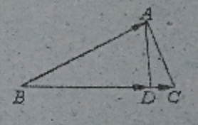

【平面向量】20190330A:
如图,在ΔABC中,AD是BC边上的高,若AB−→=a→,BC−→−=b→,则BD−→−=()

小蒋的解答:
知识点1:向量投影法则,数量积....................
根据向量投影法则,即BD是BA在BC上的投影,
∴有BD−→−⋅BC−→−=BA−→⋅BC−→−
BD−→−⋅b→=a→⋅b→
|BD−→−|⋅|b→|=a→⋅b→
∴|BD−→−|=a→⋅b→|b→|
知识点2:单位向量,数乘....................
b→方向上的单位向量是b→|b→|
∴BD−→−方向上的单位向量是b→|b→|
∴BD−→−=|BD−→−|⋅单位向量=a→⋅b→|b→|⋅b→|b→|=a→⋅b→|b→|2⋅b→